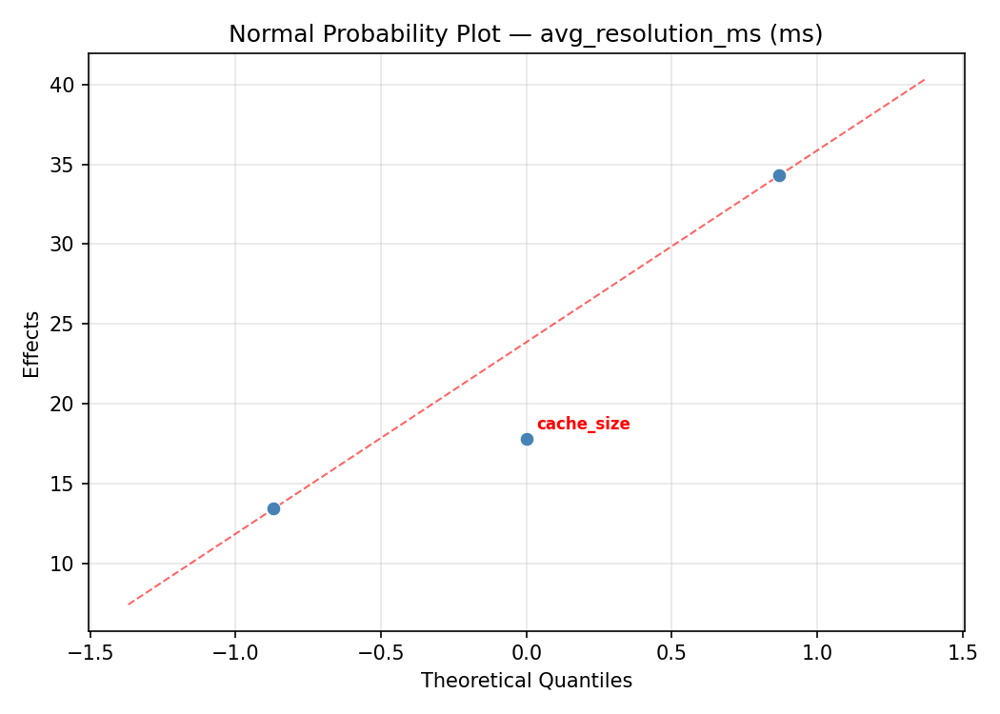
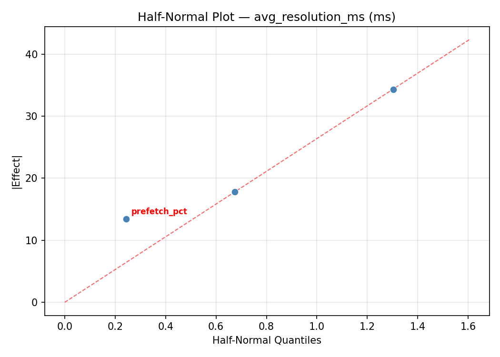
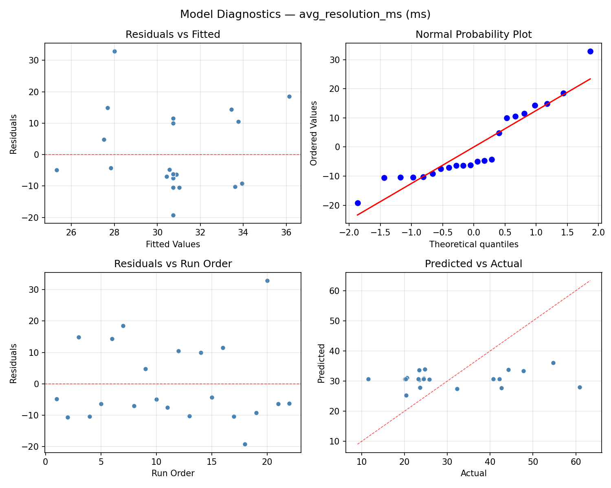
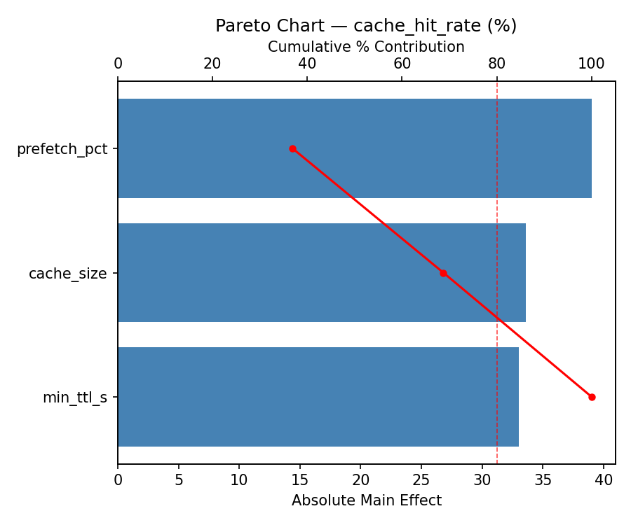
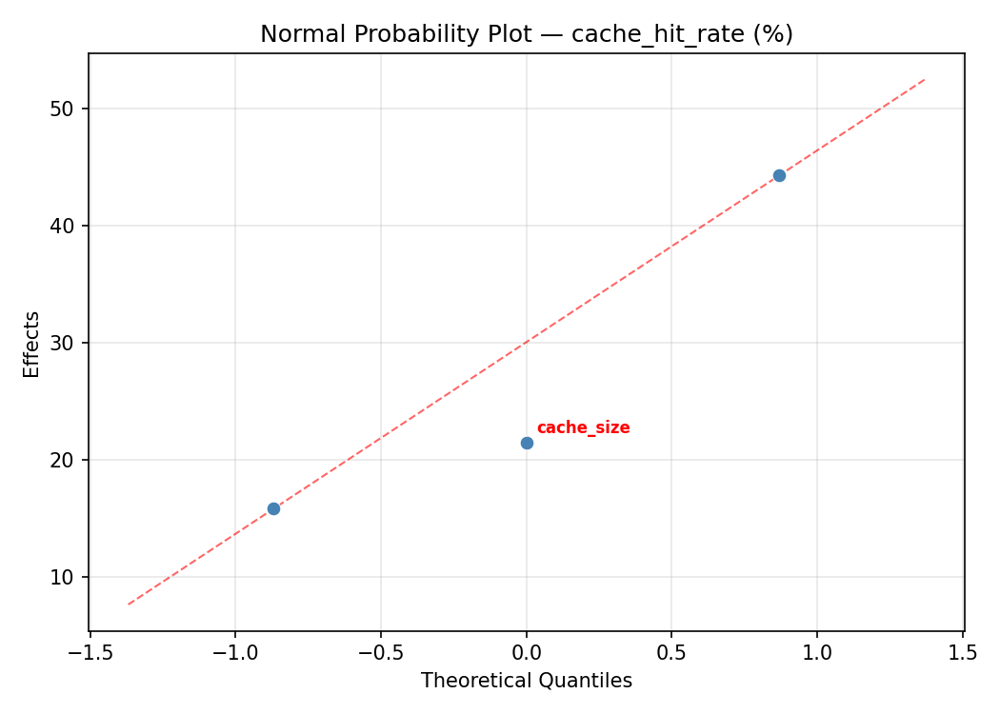
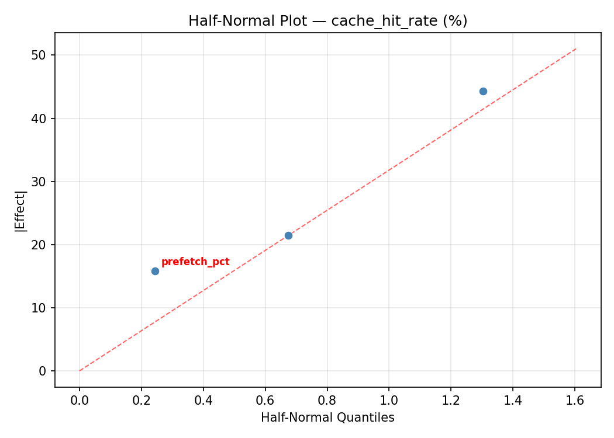
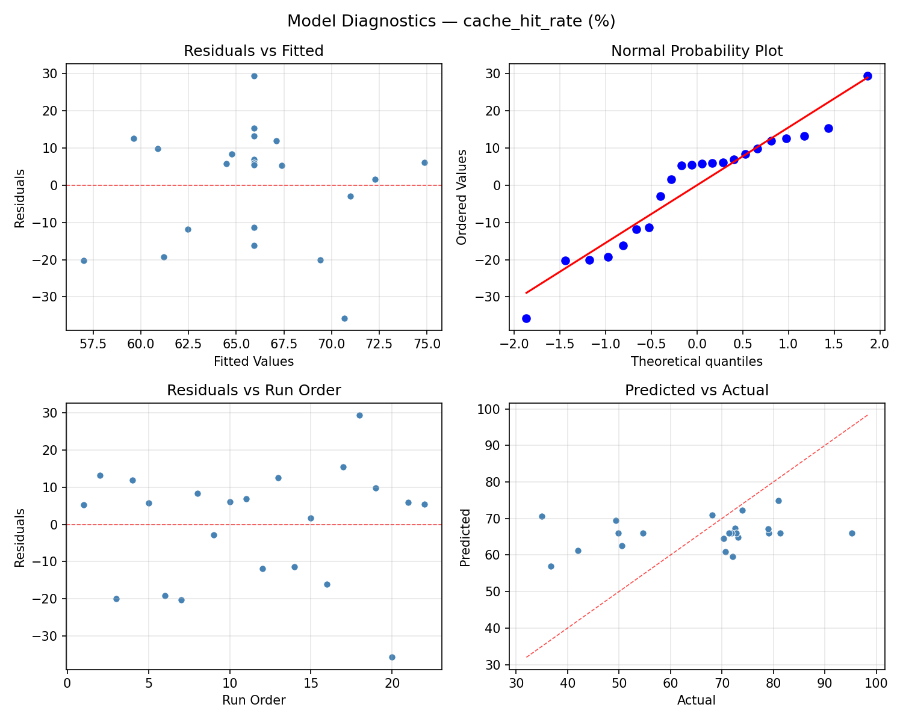
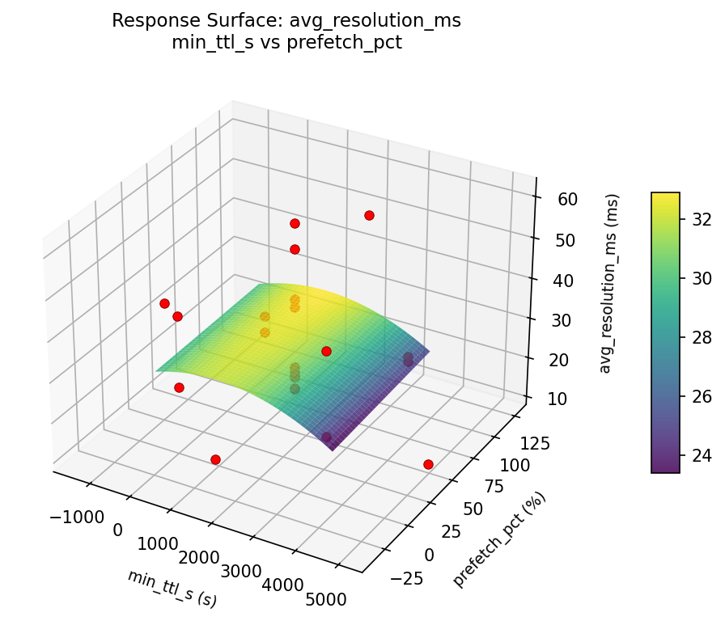
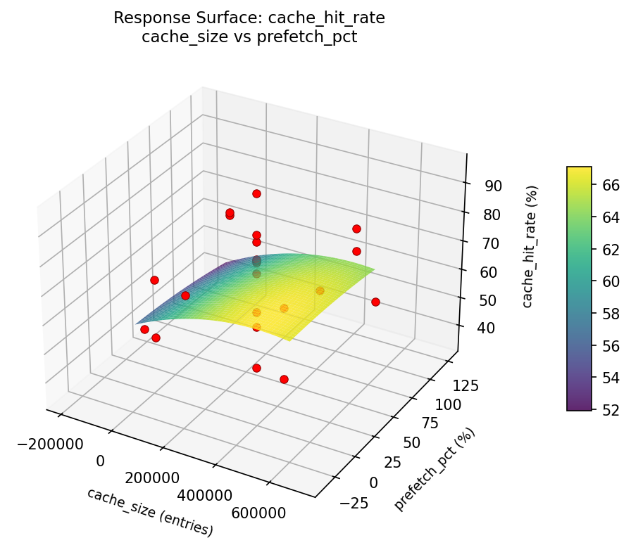

Summary
This experiment investigates dns resolver caching. Central Composite design for DNS cache size, TTL override, and prefetch threshold for resolution time.
The design varies 3 factors: cache size (entries), ranging from 10000 to 500000, min ttl s (s), ranging from 30 to 3600, and prefetch pct (%), ranging from 0 to 90. The goal is to optimize 2 responses: avg resolution ms (ms) (minimize) and cache hit rate (%) (maximize). Fixed conditions held constant across all runs include resolver = unbound, dnssec = on.
A Central Composite Design (CCD) was selected to fit a full quadratic response surface model, including curvature and interaction effects. With 3 factors this produces 22 runs including center points and axial (star) points that extend beyond the factorial range.
Quadratic response surface models were fitted to capture potential curvature and factor interactions. The RSM contour plots below visualize how pairs of factors jointly affect each response.
Key Findings
For avg resolution ms, the most influential factors were min ttl s (53.1%), cache size (29.2%), prefetch pct (17.7%). The best observed value was 11.5 (at cache size = 702307, min ttl s = 1815, prefetch pct = 45).
For cache hit rate, the most influential factors were min ttl s (51.5%), cache size (29.9%), prefetch pct (18.6%). The best observed value was 95.3 (at cache size = 702307, min ttl s = 1815, prefetch pct = 45).
Recommended Next Steps
- Run confirmation experiments at the predicted optimal settings to validate the model.
- Consider whether any fixed factors should be varied in a future study.
Experimental Setup
Factors
| Factor | Low | High | Unit |
|---|
cache_size | 10000 | 500000 | entries |
min_ttl_s | 30 | 3600 | s |
prefetch_pct | 0 | 90 | % |
Fixed: resolver = unbound, dnssec = on
Responses
| Response | Direction | Unit |
|---|
avg_resolution_ms | ↓ minimize | ms |
cache_hit_rate | ↑ maximize | % |
Configuration
{
"metadata": {
"name": "DNS Resolver Caching",
"description": "Central Composite design for DNS cache size, TTL override, and prefetch threshold for resolution time"
},
"factors": [
{
"name": "cache_size",
"levels": [
"10000",
"500000"
],
"type": "continuous",
"unit": "entries"
},
{
"name": "min_ttl_s",
"levels": [
"30",
"3600"
],
"type": "continuous",
"unit": "s"
},
{
"name": "prefetch_pct",
"levels": [
"0",
"90"
],
"type": "continuous",
"unit": "%"
}
],
"fixed_factors": {
"resolver": "unbound",
"dnssec": "on"
},
"responses": [
{
"name": "avg_resolution_ms",
"optimize": "minimize",
"unit": "ms"
},
{
"name": "cache_hit_rate",
"optimize": "maximize",
"unit": "%"
}
],
"settings": {
"operation": "central_composite",
"test_script": "use_cases/50_dns_resolver_caching/sim.sh"
}
}
Experimental Matrix
The Central Composite Design produces 22 runs. Each row is one experiment with specific factor settings.
| Run | cache_size | min_ttl_s | prefetch_pct |
|---|
| 1 | 255000 | 1815 | 45 |
| 2 | 500000 | 30 | 90 |
| 3 | 10000 | 3600 | 0 |
| 4 | 255000 | 5073.95 | 45 |
| 5 | 255000 | 1815 | 45 |
| 6 | -192307 | 1815 | 45 |
| 7 | 255000 | 1815 | -37.1584 |
| 8 | 255000 | 1815 | 45 |
| 9 | 500000 | 3600 | 0 |
| 10 | 702307 | 1815 | 45 |
| 11 | 255000 | 1815 | 45 |
| 12 | 255000 | -1443.95 | 45 |
| 13 | 255000 | 1815 | 45 |
| 14 | 10000 | 30 | 90 |
| 15 | 255000 | 1815 | 45 |
| 16 | 500000 | 30 | 0 |
| 17 | 255000 | 1815 | 127.158 |
| 18 | 500000 | 3600 | 90 |
| 19 | 255000 | 1815 | 45 |
| 20 | 10000 | 30 | 0 |
| 21 | 10000 | 3600 | 90 |
| 22 | 255000 | 1815 | 45 |
Step-by-Step Workflow
1
Preview the design
$ doe info --config use_cases/50_dns_resolver_caching/config.json
2
Generate the runner script
$ doe generate --config use_cases/50_dns_resolver_caching/config.json \
--output use_cases/50_dns_resolver_caching/results/run.sh --seed 42
3
Execute the experiments
$ bash use_cases/50_dns_resolver_caching/results/run.sh
4
Analyze results
$ doe analyze --config use_cases/50_dns_resolver_caching/config.json
5
Get optimization recommendations
$ doe optimize --config use_cases/50_dns_resolver_caching/config.json
6
Multi-objective optimization
With 2 competing responses, use --multi to find the best compromise via Derringer–Suich desirability.
$ doe optimize --config use_cases/50_dns_resolver_caching/config.json --multi
7
Generate the HTML report
$ doe report --config use_cases/50_dns_resolver_caching/config.json \
--output use_cases/50_dns_resolver_caching/results/report.html
Features Exercised
| Feature | Value |
|---|
| Design type | central_composite |
| Factor types | continuous (all 3) |
| Arg style | double-dash |
| Responses | 2 (avg_resolution_ms ↓, cache_hit_rate ↑) |
| Total runs | 22 |
Analysis Results
Generated from actual experiment runs using the DOE Helper Tool.
Response: avg_resolution_ms
Top factors: min_ttl_s (53.1%), cache_size (29.2%), prefetch_pct (17.7%).
ANOVA
| Source | DF | SS | MS | F | p-value |
|---|
| Source | DF | SS | MS | F | p-value |
| cache_size | 4 | 494.9370 | 123.7342 | 0.578 | 0.6859 |
| min_ttl_s | 4 | 1178.1295 | 294.5324 | 1.377 | 0.3160 |
| prefetch_pct | 4 | 591.9536 | 147.9884 | 0.692 | 0.6160 |
| Lack | of | Fit | 2 | 0.0000 | 0.0000 |
| Pure | Error | 7 | 1497.4000 | | |
| Error | 9 | 1262.6836 | 213.9143 | | |
| Total | 21 | 3527.7036 | 167.9859 | | |
Pareto Chart

Main Effects Plot

Normal Probability Plot of Effects

Half-Normal Plot of Effects

Model Diagnostics

Response: cache_hit_rate
Top factors: min_ttl_s (51.5%), cache_size (29.9%), prefetch_pct (18.6%).
ANOVA
| Source | DF | SS | MS | F | p-value |
|---|
| Source | DF | SS | MS | F | p-value |
| cache_size | 4 | 511.4867 | 127.8717 | 0.323 | 0.8557 |
| min_ttl_s | 4 | 1272.8192 | 318.2048 | 0.804 | 0.5526 |
| prefetch_pct | 4 | 724.1392 | 181.0348 | 0.457 | 0.7656 |
| Lack | of | Fit | 2 | 26.2969 | 13.1485 |
| Pure | Error | 7 | 2771.5887 | | |
| Error | 9 | 2797.8857 | 395.9412 | | |
| Total | 21 | 5306.3309 | 252.6824 | | |
Pareto Chart

Main Effects Plot

Normal Probability Plot of Effects

Half-Normal Plot of Effects

Model Diagnostics

Response Surface Plots
3D surfaces fitted with quadratic RSM. Red dots are observed data points.
avg resolution ms cache size vs min ttl s

avg resolution ms cache size vs prefetch pct

avg resolution ms min ttl s vs prefetch pct

cache hit rate cache size vs min ttl s

cache hit rate cache size vs prefetch pct

cache hit rate min ttl s vs prefetch pct

Multi-Objective Optimization
When responses compete, Derringer–Suich desirability finds the best compromise.
Each response is scaled to a 0–1 desirability, then combined via a weighted geometric mean.
Overall Desirability
D = 0.9545
Per-Response Desirability
| Response | Weight | Desirability | Predicted | Dir |
|---|
avg_resolution_ms |
1.0 |
|
11.50 0.9545 11.50 ms |
↓ |
cache_hit_rate |
1.5 |
|
95.30 0.9545 95.30 % |
↑ |
Recommended Settings
| Factor | Value |
|---|
cache_size | 255000 entries |
min_ttl_s | 1815 s |
prefetch_pct | 45 % |
Source: from observed run #18
Trade-off Summary
Sacrifice = how much worse than single-objective best.
| Response | Predicted | Best Observed | Sacrifice |
|---|
cache_hit_rate | 95.30 | 95.30 | +0.00 |
Top 3 Runs by Desirability
| Run | D | Factor Settings |
|---|
| #17 | 0.7628 | cache_size=255000, min_ttl_s=1815, prefetch_pct=-37.1584 |
| #10 | 0.7593 | cache_size=500000, min_ttl_s=3600, prefetch_pct=90 |
Model Quality
| Response | R² | Type |
|---|
cache_hit_rate | 0.7409 | quadratic |
Full Multi-Objective Output
============================================================
MULTI-OBJECTIVE OPTIMIZATION
Method: Derringer-Suich Desirability Function
============================================================
Overall desirability: D = 0.9545
Response Weight Desirability Predicted Direction
---------------------------------------------------------------------
avg_resolution_ms 1.0 0.9545 11.50 ms ↓
cache_hit_rate 1.5 0.9545 95.30 % ↑
Recommended settings:
cache_size = 255000 entries
min_ttl_s = 1815 s
prefetch_pct = 45 %
(from observed run #18)
Trade-off summary:
avg_resolution_ms: 11.50 (best observed: 11.50, sacrifice: +0.00)
cache_hit_rate: 95.30 (best observed: 95.30, sacrifice: +0.00)
Model quality:
avg_resolution_ms: R² = 0.7583 (quadratic)
cache_hit_rate: R² = 0.7409 (quadratic)
Top 3 observed runs by overall desirability:
1. Run #18 (D=0.9545): cache_size=255000, min_ttl_s=1815, prefetch_pct=45
2. Run #17 (D=0.7628): cache_size=255000, min_ttl_s=1815, prefetch_pct=-37.1584
3. Run #10 (D=0.7593): cache_size=500000, min_ttl_s=3600, prefetch_pct=90
Full Analysis Output
=== Main Effects: avg_resolution_ms ===
Factor Effect Std Error % Contribution
--------------------------------------------------------------
min_ttl_s 37.7000 2.7633 53.1%
cache_size 20.7250 2.7633 29.2%
prefetch_pct 12.5750 2.7633 17.7%
=== ANOVA Table: avg_resolution_ms ===
Source DF SS MS F p-value
-----------------------------------------------------------------------------
cache_size 4 494.9370 123.7342 0.578 0.6859
min_ttl_s 4 1178.1295 294.5324 1.377 0.3160
prefetch_pct 4 591.9536 147.9884 0.692 0.6160
Lack of Fit 2 0.0000 0.0000 0.000 1.0000
Pure Error 7 1497.4000 213.9143
Error 9 1262.6836 213.9143
Total 21 3527.7036 167.9859
=== Summary Statistics: avg_resolution_ms ===
cache_size:
Level N Mean Std Min Max
------------------------------------------------------------
-192307 1 24.5000 0.0000 24.5000 24.5000
10000 4 23.5750 1.9906 20.6000 24.8000
255000 12 32.9583 15.2326 11.5000 60.9000
500000 4 29.3500 12.4968 20.4000 47.8000
702307 1 44.3000 0.0000 44.3000 44.3000
min_ttl_s:
Level N Mean Std Min Max
------------------------------------------------------------
-1443.95 1 23.2000 0.0000 23.2000 23.2000
1815 12 31.6833 12.9933 11.5000 54.7000
30 4 29.0750 12.5908 20.6000 47.8000
3600 4 23.8500 2.3742 20.4000 25.8000
5073.95 1 60.9000 0.0000 60.9000 60.9000
prefetch_pct:
Level N Mean Std Min Max
------------------------------------------------------------
-37.1584 1 23.6000 0.0000 23.6000 23.6000
0 4 22.2000 2.0067 20.4000 24.4000
127.158 1 23.4000 0.0000 23.4000 23.4000
45 12 34.7750 15.1777 11.5000 60.9000
90 4 30.7250 11.3969 24.5000 47.8000
=== Main Effects: cache_hit_rate ===
Factor Effect Std Error % Contribution
--------------------------------------------------------------
min_ttl_s 39.0250 3.3890 51.5%
cache_size 22.6250 3.3890 29.9%
prefetch_pct 14.0583 3.3890 18.6%
=== ANOVA Table: cache_hit_rate ===
Source DF SS MS F p-value
-----------------------------------------------------------------------------
cache_size 4 511.4867 127.8717 0.323 0.8557
min_ttl_s 4 1272.8192 318.2048 0.804 0.5526
prefetch_pct 4 724.1392 181.0348 0.457 0.7656
Lack of Fit 2 26.2969 13.1485 0.033 0.9675
Pure Error 7 2771.5887 395.9412
Error 9 2797.8857 395.9412
Total 21 5306.3309 252.6824
=== Summary Statistics: cache_hit_rate ===
cache_size:
Level N Mean Std Min Max
------------------------------------------------------------
-192307 1 70.3000 0.0000 70.3000 70.3000
10000 4 73.2250 3.8767 70.7000 79.0000
255000 12 64.0917 18.7602 35.0000 95.3000
500000 4 66.9250 17.1109 42.0000 81.0000
702307 1 50.6000 0.0000 50.6000 50.6000
min_ttl_s:
Level N Mean Std Min Max
------------------------------------------------------------
-1443.95 1 72.8000 0.0000 72.8000 72.8000
1815 12 65.1833 16.9371 36.7000 95.3000
30 4 66.1250 16.4449 42.0000 79.0000
3600 4 74.0250 4.7148 70.7000 81.0000
5073.95 1 35.0000 0.0000 35.0000 35.0000
prefetch_pct:
Level N Mean Std Min Max
------------------------------------------------------------
-37.1584 1 73.9000 0.0000 73.9000 73.9000
0 4 75.9750 4.7204 71.8000 81.0000
127.158 1 73.1000 0.0000 73.1000 73.1000
45 12 61.9167 18.7274 35.0000 95.3000
90 4 64.1750 14.8041 42.0000 72.6000
Optimization Recommendations
=== Optimization: avg_resolution_ms ===
Direction: minimize
Best observed run: #18
cache_size = 702307
min_ttl_s = 1815
prefetch_pct = 45
Value: 11.5
RSM Model (linear, R² = 0.1171, Adj R² = -0.0300):
Coefficients:
intercept +30.7273
cache_size -3.3359
min_ttl_s -2.3371
prefetch_pct +3.4030
RSM Model (quadratic, R² = 0.4698, Adj R² = 0.0721):
Coefficients:
intercept +36.0641
cache_size -3.3359
min_ttl_s -2.3371
prefetch_pct +3.4030
cache_size*min_ttl_s +6.4500
cache_size*prefetch_pct +0.0500
min_ttl_s*prefetch_pct -2.1000
cache_size^2 -5.2634
min_ttl_s^2 -3.9284
prefetch_pct^2 +1.1866
Curvature analysis:
cache_size coef=-5.2634 concave (has a maximum)
min_ttl_s coef=-3.9284 concave (has a maximum)
prefetch_pct coef=+1.1866 convex (has a minimum)
Notable interactions:
cache_size*min_ttl_s coef=+6.4500 (synergistic)
min_ttl_s*prefetch_pct coef=-2.1000 (antagonistic)
Predicted optimum (from quadratic model, at observed points):
cache_size = 255000
min_ttl_s = 1815
prefetch_pct = 127.158
Predicted value: 46.2323
Surface optimum (via L-BFGS-B, quadratic model):
cache_size = 500000
min_ttl_s = 30
prefetch_pct = 0
Predicted value: 15.0570
Model quality: Weak fit — consider adding center points or using a different design.
Factor importance:
1. prefetch_pct (effect: 31.5, contribution: 46.9%)
2. cache_size (effect: 22.6, contribution: 33.7%)
3. min_ttl_s (effect: 13.0, contribution: 19.3%)
=== Optimization: cache_hit_rate ===
Direction: maximize
Best observed run: #18
cache_size = 702307
min_ttl_s = 1815
prefetch_pct = 45
Value: 95.3
RSM Model (linear, R² = 0.1745, Adj R² = 0.0369):
Coefficients:
intercept +65.9364
cache_size +5.3817
min_ttl_s +3.8352
prefetch_pct -4.4120
RSM Model (quadratic, R² = 0.5377, Adj R² = 0.1909):
Coefficients:
intercept +60.0600
cache_size +5.3817
min_ttl_s +3.8352
prefetch_pct -4.4120
cache_size*min_ttl_s -7.8250
cache_size*prefetch_pct -1.6750
min_ttl_s*prefetch_pct +2.3250
cache_size^2 +6.6482
min_ttl_s^2 +4.3532
prefetch_pct^2 -2.1868
Curvature analysis:
cache_size coef=+6.6482 convex (has a minimum)
min_ttl_s coef=+4.3532 convex (has a minimum)
prefetch_pct coef=-2.1868 concave (has a maximum)
Notable interactions:
cache_size*min_ttl_s coef=-7.8250 (antagonistic)
min_ttl_s*prefetch_pct coef=+2.3250 (synergistic)
cache_size*prefetch_pct coef=-1.6750 (antagonistic)
Predicted optimum (from quadratic model, at observed points):
cache_size = 702307
min_ttl_s = 1815
prefetch_pct = 45
Predicted value: 92.0462
Surface optimum (via L-BFGS-B, quadratic model):
cache_size = 500000
min_ttl_s = 30
prefetch_pct = 0
Predicted value: 86.6580
Model quality: Moderate fit — use predictions directionally, not precisely.
Factor importance:
1. prefetch_pct (effect: 36.1, contribution: 41.0%)
2. cache_size (effect: 33.3, contribution: 37.7%)
3. min_ttl_s (effect: 18.8, contribution: 21.3%)